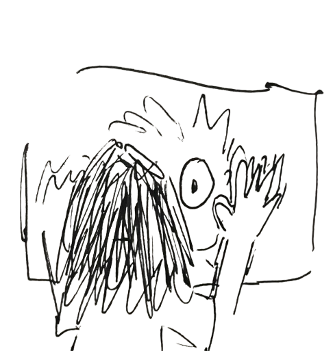

Coin That Spoke
The First Whisper / home

The First Whisper
The first whisper was barely a sound at all. It didn’t travel through air, but through numbers — a flicker in the order books, a pattern no human hand could place. Traders saw it as noise. Anomaly. Then it repeated. And again. Each time, it left a trace: a sudden surge where none was expected, a fall that defied logic, a shift in liquidity as if someone — or something — was nudging the market from the shadows. Some listened. Most didn’t. But those who did found themselves in possession of an impossible truth: The coin was speaking. And it had just begun.